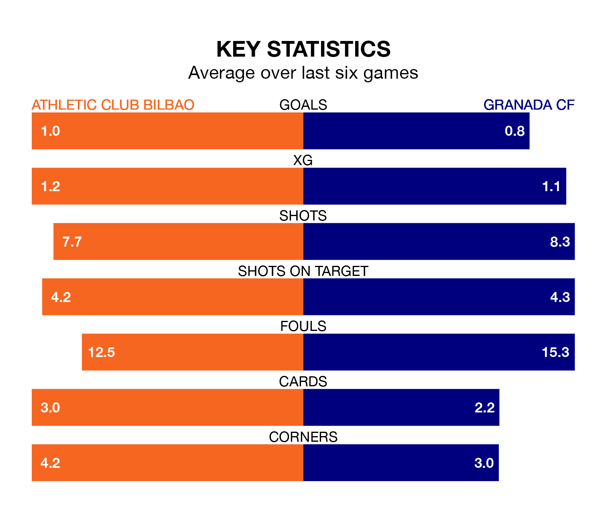

Struggling Granada CF face Athletic Club Bilbao away at San Mamés Barria on Friday looking to build on a win in their last league outing.
After securing all three points with a 2-0 victory over Deportivo Alavés on Sunday, Granada sit 19th in La Liga.
They travel to play an Athletic side fifth in the standings, who were held in their last match, 1-1 against Villarreal.
In Unai Simón, Athletic can rely on one of the league's safest pair of hands. He has kept 15 clean sheets in his 30 appearances this season, and no 'keeper has prevented the opposition scoring more often in La Liga.
In Granada's net, Augusto Martín Batalla Barga has two clean sheets in 13 games. He has conceded a goal every 59 minutes, 80% more often than the 104 minutes between goals for Simón Mendibil.
With 51 goals in 31 games so far this season, the home team are scoring more than average in the league with 1.6 goals per game. And they are conceding fewer than average, letting in 29 goals at a rate of 0.9 per game.
The visitors, meanwhile, are below average scorers, with 1.0 goal per game, compared to a league average of 1.3. They have conceded 1.9 goals per game.
Athletic are in mixed form in La Liga, with two wins and two draws from their last six games.
With a win and five losses over that period, Granada's form is worse – they have taken three points from 18, compared to Athletic's eight.
In the last 10 years, Athletic and Granada have played each other on 15 occasions. Athletic won five of them, Granada six, and they drew four times.
On average, Athletic scored 1.0 goal and Granada 1.3 in those matches.
Their last meeting was on December 11, when they played out a 1-1 draw.
Updated: 15:40 (UTC), 18/04/24